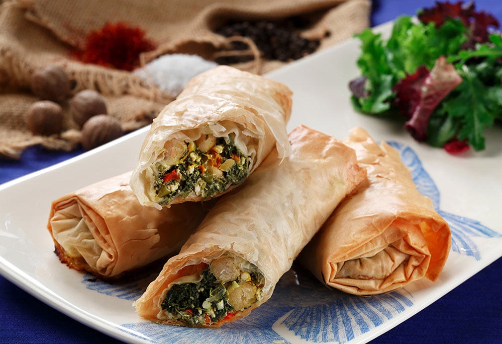

Phyllo Bundles with Saffron Flavored Chickpeas

Ingredients
- 4 Tbsp canola oil 30 mL, divided
- 1 large red bell pepper, ribs and seeds discarded, finely chopped
- 1/2 tsp saffron threads 2 mL
- 1 can (15 oz/425 g) chickpeas (garbanzo beans), drained and rinsed
- 1 package (10 oz/283 g) frozen chopped spinach, thawed and squeezed of all excess liquid
- 1 package (8 oz/227 g) feta cheese, crumbled
- 6 scallions, green tops and white bulbs thinly sliced
- 1 Tbsp finely chopped fresh dill 15 mL
- 2 large eggs, lightly beaten
- 1 large lemon, zested and juiced
- 1 tsp freshly grated nutmeg 5 mL
- 1/2 tsp coarsely ground black pepper 2 mL
- 1/2 tsp coarse sea or kosher salt 2 mL
- 1 package (1 lb/454 g) frozen phyllo sheets, thawed, unwrapped and covered with a damp kitchen towel
Instructions
- Line cookie sheet with parchment paper. Place oven rack in center of oven and preheat oven to 375 °F (190 °C).
- In medium skillet, heat 2 Tbsp (30 mL) canola oil over medium-high heat. Once oil appears to shimmer, add pepper and saffron and stir-fry until pepper is softened, about 5 minutes. Scrape this orange-hued medley into medium bowl, leaving any remaining oil in skillet. Add remaining 2 Tbsp (30 mL) canola oil in skillet, mix and set aside.
- In small bowl, add chickpeas, spinach, feta, scallions, dill, eggs, lemon, nutmeg, pepper and salt. Mix well.
- Working on clean and dry cutting board, carefully peel apart one phyllo sheet and place on board. Brush with saffron-hued oil from skillet. Peel second phyllo sheet and place on brushed surface. Repeat twice more for stack of four sheets.
- Place 1/2 cup (125 mL) filling alongside lower third part of shorter side of phyllo sheet. Fold longer edges over filling and roll sheets, burrito-style, to reach top third of other short sides. Brush edges with saffron canola oil and fold over to form a snug packet. Brush all sides with more oil and place on cookie sheet. Repeat with remaining phyllo sheet (you may have some leftover) and use up all filling until you have about eight bundles.
- Bake bundles until sunny brown and crispy, about 45 minutes. Let cool for 5 minutes and serve with colorful side dishes as desired.